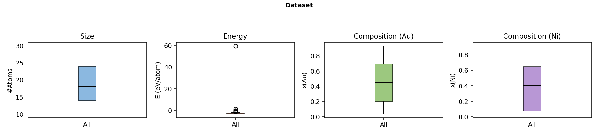
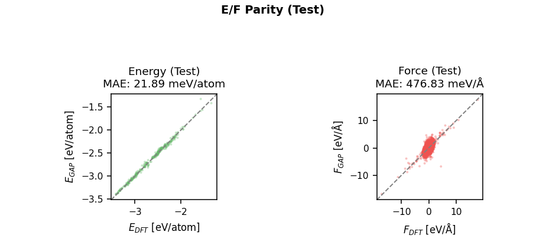
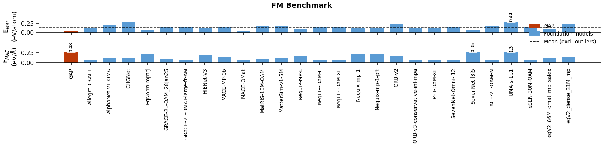

Ag–Au–Ni
← Back to Periodic Table
Basic Information
System
Ag–Au–Ni
Type
Ternary Alloy Nanocluster
Constituent Elements
Ag, Au, Ni

▦
Dataset (Atom Count / Energy / Composition ×2)
Target: 1848×420px (figsize 13.2×3.0 @ 140dpi)

▦
Energy / Force Parity (Test Set)
Target: 924×420px (figsize 6.6×3.0 @ 140dpi)

▦
GAP vs. Foundation Models (Ternary Test)
new
Target: 1610×387px (figsize 11.5×2.77 @ 140dpi)
Model
GAP File